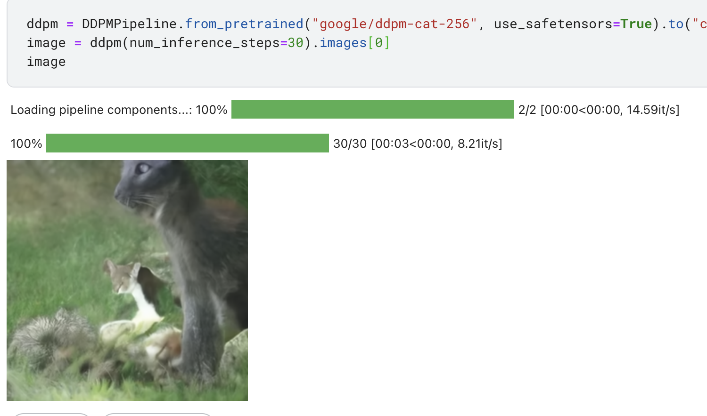
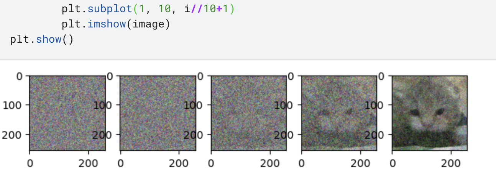
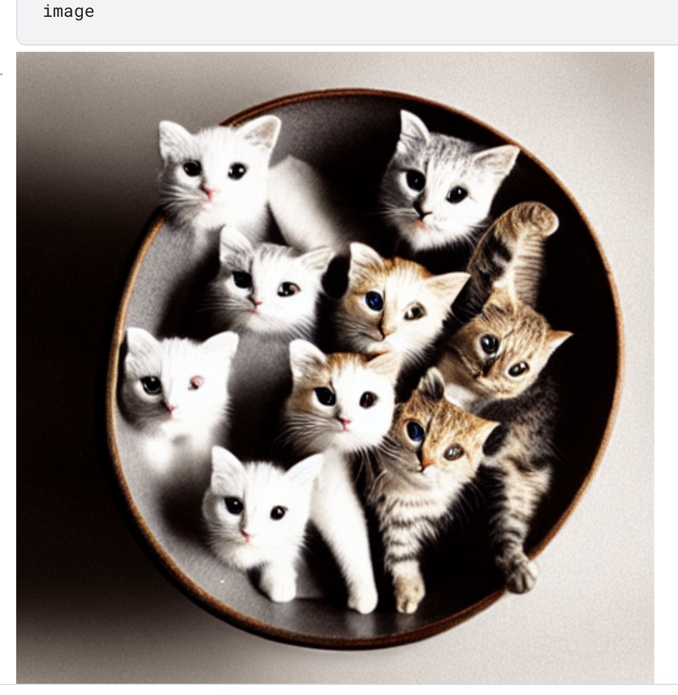

ldm的VQGAN还在跑,先来看下huggingface现有的diffusion model的实现框架.
文档链接
diffusion model(ddpm)
install
首先安装和import 1 2 3 !pip install diffusers["torch" ] transformers from diffusers import DDPMPipeline
pipline
pipline简洁代码 1 2 3 ddpm = DDPMPipeline.from_pretrained("google/ddpm-cat-256" , use_safetensors=True ).to("cuda" ) image = ddpm(num_inference_steps=30 ).images[0 ] image

效果其实一般.
内部细节
还是和前面看的ddpm一样, Unet加上一个scheduler. 对生成结果进行绘图得到以下结果. 1 2 3 4 5 6 7 8 9 10 11 12 13 14 15 16 17 18 19 20 21 22 23 24 25 26 from PIL import Imageimport numpy as npfrom matplotlib import pyplot as pltimport torchfrom diffusers import DDPMScheduler, UNet2DModelscheduler = DDPMScheduler.from_pretrained('google/ddpm-cat-256' ) model = UNet2DModel.from_pretrained('google/ddpm-cat-256' , use_safetensors=True ).to('cuda' ) scheduler.set_timesteps(50 ) noice = torch.randn((1 ,3 ,model.config.sample_size,model.config.sample_size), device='cuda' ) img_index = 0 fig = plt.figure(figsize=(15 ,15 )) for i, t in enumerate (scheduler.timesteps): with torch.no_grad(): noisy_residual = model(noice, t).sample previous_noisy_sample = scheduler.step(noisy_residual, t, noice).prev_sample noice = previous_noisy_sample if i % 10 == 0 : image = (noice / 2 + 0.5 ).clamp(0 , 1 ).squeeze() image = (image.permute(1 , 2 , 0 ) * 255 ).round ().to(torch.uint8).cpu().numpy() image = Image.fromarray(image) plt.subplot(1 , 10 , i//10 +1 ) plt.imshow(image) plt.show()

stable diffusion
PNDM(Pseudo Numerical Methods for Diffusion Models on Manifolds)
scheduler也是有不少的,从ddpm到ddim到pndm,具体可以看Note on Variants of Diffusion Scheduler, DDPM DDIM PNDM .
大概来说就是ddpm基于markov,ddim是deterministic且对back process做了优化. pndm是对ddim做出了微分方程求解层面的优化.
不过官方给的说法是stable diffusion默认用pndm,那我们就展现一下换scheduler有多简单,于是用的就是UniPCMultistepScheduler.
load from pretrained
这里区别于前面的UNet,这里的UNet是conditional. 然后encoder用的AutoencoderKL.
1 2 3 4 5 6 7 8 9 10 11 12 13 14 15 16 17 18 19 20 from PIL import Imageimport torchfrom transformers import CLIPTextModel, CLIPTokenizerfrom diffusers import AutoencoderKL, UNet2DConditionModel, PNDMSchedulerfrom diffusers import UniPCMultistepSchedulervae = AutoencoderKL.from_pretrained("CompVis/stable-diffusion-v1-4" , subfolder="vae" , use_safetensors=True ) tokenizer = CLIPTokenizer.from_pretrained("CompVis/stable-diffusion-v1-4" , subfolder="tokenizer" ) text_encoder = CLIPTextModel.from_pretrained( "CompVis/stable-diffusion-v1-4" , subfolder="text_encoder" , use_safetensors=True ) unet = UNet2DConditionModel.from_pretrained( "CompVis/stable-diffusion-v1-4" , subfolder="unet" , use_safetensors=True ) scheduler = UniPCMultistepScheduler.from_pretrained("CompVis/stable-diffusion-v1-4" , subfolder="scheduler" ) torch_device = "cuda" vae.to(torch_device) text_encoder.to(torch_device) unet.to(torch_device)
text processing
文本方面就是先tokenize然后embedding,然后取padding token再做一次embedding最后concat
1 2 3 4 5 6 7 8 9 10 11 12 13 14 15 16 17 18 19 prompt = ["a photograph of a bowl of cats" ] batch_size = len (prompt) text_input = tokenizer( prompt, padding="max_length" , max_length=tokenizer.model_max_length, truncation=True , return_tensors="pt" ) with torch.no_grad(): text_embeddings = text_encoder(text_input.input_ids.to(torch_device))[0 ] max_length = text_input.input_ids.shape[-1 ] uncond_input = tokenizer(["" ] * batch_size, padding="max_length" , max_length=max_length, return_tensors="pt" ) uncond_embeddings = text_encoder(uncond_input.input_ids.to(torch_device))[0 ] text_embeddings = torch.cat([uncond_embeddings, text_embeddings])
train
这里官方的generator会出问题,用cuda的话记得用torch.cuda.manual_seed
然后思路很简单, 直接check vae的downsample数,然后对维度直接进行调整,生成latent space的random input.
然后unet里面传入text embedding作为hidden state. 然后这里guidance我不是很理解,大概是unet默认同时传出conditional和unconditional的result,然后这里手动做调整?
1 2 3 4 5 6 7 8 9 10 11 12 13 14 15 16 17 18 19 20 21 22 23 24 25 26 27 28 29 30 31 32 33 34 35 36 37 from tqdm.auto import tqdmheight = 512 width = 512 num_inference_steps = 25 guidance_scale = 7.5 generator = torch.cuda.manual_seed(0 ) latents = torch.randn( (batch_size, unet.config.in_channels, height // 8 , width // 8 ), generator=generator, device=torch_device, ) latents = latents * scheduler.init_noise_sigma scheduler.set_timesteps(num_inference_steps) for t in tqdm(scheduler.timesteps): latent_model_input = torch.cat([latents] * 2 ) latent_model_input = scheduler.scale_model_input(latent_model_input, timestep=t) with torch.no_grad(): noise_pred = unet(latent_model_input, t, encoder_hidden_states=text_embeddings).sample noise_pred_uncond, noise_pred_text = noise_pred.chunk(2 ) noise_pred = noise_pred_uncond + guidance_scale * (noise_pred_text - noise_pred_uncond) latents = scheduler.step(noise_pred, t, latents).prev_sample
show result
1 2 3 4 5 6 7 latents = 1 / 0.18215 * latents with torch.no_grad(): image = vae.decode(latents).sample image = (image / 2 + 0.5 ).clamp(0 , 1 ).squeeze() image = (image.permute(1 , 2 , 0 ) * 255 ).to(torch.uint8).cpu().numpy() image = Image.fromarray(image) image
